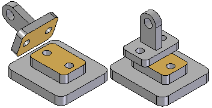
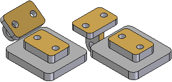
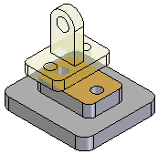

About the FlashFit relationship
 (Home tab→Assemble group→FlashFit)
(Home tab→Assemble group→FlashFit)
The FlashFit workflow reduces the steps required to position parts using Mate, Planar Align, and Axial Align relationships when compared to the traditional workflow (for more information about different workflows, see Understanding Assembly relationships). Because many parts are positioned using these relationships, FlashFit is appropriate and quicker in many situations.
One of the advantages of using FlashFit to form a relationship is the ability and flexibility of forming relationships to Points, Linear edges, Circular edges, Vertices, and Cylindrical faces as well as Planar faces.
To position a part using FlashFit, begin by selecting the desired relationship option on the placement part. Use QuickPick to help identify the most appropriate option. Then select the appropriate face or edge on the target part and let the FlashFit placement logic built into Solid Edge determine the most likely relationship, based on the target part element.
For example, if you select a planar face on the placement and target parts, the software assumes that you want to place a Mate or Planar Align relationship. When you select a face on the target part element, the software positions the placement part in the assembly using the closest solution.
-
If the two faces are closer to a mate solution, a Mate relationship is applied.

-
If the two faces are closer to a planar solution, a Planar Align relationship is applied.

A Flip button on the FlashFit command bar is used to select the alternate solution. The F key on the keyboard can also be pressed to select an alternate solution.
When using FlashFit to position a part, the part assumes a translucent display appearance to make it easier to differentiate from the other parts in the assembly.

When possible, FlashFit moves the first part that was selected when applying the relationship while the second part remains stationary. If the first part is fully constrained, the second part moves.
The FlashFit option can then be used to define additional relationships required to fully position the part in the assembly, or select another relationship type.
When placing a subassembly using the FlashFit or Reduced Steps workflows, the parts in the subassembly must be active before anything can be selected.
Using FlashFit for positioning fasteners
FlashFit also allows more flexibility to use edges, in addition to faces, when positioning a part using mate, axial align, and planar align relationships. This can be especially useful when positioning a fastener, such as a bolt into hole.
For example, when positioning a part using an Axial Align relationship, a circular edge cannot be selected. However when using FlashFit, a circular edge on both the placement part and target part can be selected to completely position the part in two steps.
FlashFit options
The Assemble command bar Options dialog is used to set which FlashFit options to consider when placing a part. For example, any combination of the following element types can be specified to placing a part; Planer faces, Cylindrical faces, Linear edges, or Points. This allows the behavior of the FlashFit command to be tailored for the part that is currently being placed. This action can help limit the number of identified elements to only those specific elements being sought when applying a relationship.
Moving and rotating parts with FlashFit
When using FlashFit, the placement can be moved or rotated into a more convenient location. To move the part, position the cursor over the part and drag the cursor.
To rotate the part, press the Ctrl key while dragging the cursor. If any relationships have already been applied to the placement part, the movement or rotation is limited to the available degrees of freedom.
How do I
Using the Mate commandModify the offset value for a Mate relationship
Using the Planar Align command
Apply an axial align relationship
Insert a part in an assembly
Apply a connect relationship
Using the Angle command
Using the Tangent command
Place a cam relationship
Apply a path relationship
Using the Parallel command
Apply a gear relationship
Using the Center-Plane command
Place a Rigid Set relationship
Using the Ground command
Update the working environment
Learn more
Assembly Relationships ManagerLook up more details
About the Mate relationshipAbout the Planar Align relationship
About the Axial Align relationship
About the Insert relationship
About the Connect relationship
About the Angle relationship
About the Tangent relationship
About the Cam relationship
About the Path relationship
About the Parallel relationship
About the Gear relationship
Position two parts by matching their coordinate systems
About the Match Coordinate Systems relationship
About the Center-Plane relationship
About the Rigid Set relationship
About the Ground relationship
Update Relationships command